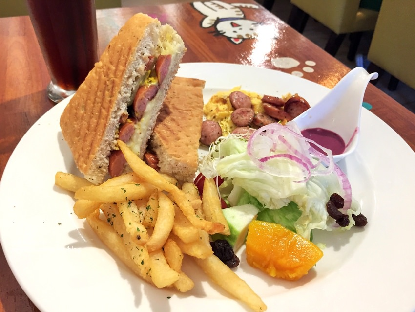

今天整理了一些高雄美食
讓大家看看哪裡還有不知道的美食

- 早起第一餐:早餐
- 燒肉咬蛋
地址:高雄市前金區自強三路222號
電話:(07)-215-6879 (外帶可先電話預約)
營業時間:6:30~13:00
交通方式:11號公車到青年二路 / 83號公車到新田路口(自強三路)
- 好時光BRUNCH早午餐
地址:高雄市鼓山區篤敬路35號（左營巨蛋站 – 2號出口）
電話:(07)-550-0352
營業時間:平日:8:00~17:00，假日:9:00~18:00
- Mr. Potato 馬鈴薯先生
地址:高雄市左營區立大路175號（生態園區捷運站附近）
電話:(07)-343-8175
營業時間:6:00~14:00
lunch
dinner
dessert